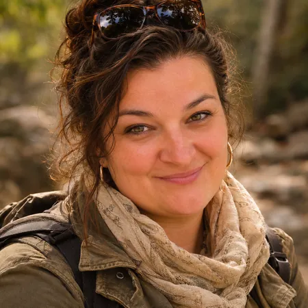

Dossard n° 2
Trésorier·ère
- Tenir les comptes et préparer le budget annuel.
- Publier les chiffres du carnet de route.
- Préparer la vérification des comptes.
Nous rejoindre
Trails of Impact est en création. C'est le meilleur moment pour embarquer : les fondations se posent maintenant, et chaque personne compte.
Le comité fondateur
Avec Victoria Goepfert, fondatrice, vous formerez le comité qui crée officiellement l'association. Pas besoin d'être expert·e : il faut de la rigueur et l'envie de tenir dans la durée.
Dossard n° 2
Dossard n° 3

Vous travaillerez avec Victoria Goepfert, fondatrice. Qui est-elle ?
Un chemin se fait à plusieurs.
Rentrée 2021, région de Kpalimé.
Autres façons d'aider
Ponctuellement, selon vos compétences : eau et solaire, comptabilité, photo et vidéo, traduction français–éwé, organisation d'événements.
Proposer mon aidePour les classes de 5H à 8H du canton de Fribourg. Nous cherchons des classes pilotes pour 2027.
Proposer ma classeCommune, entreprise ou fondation : nous vous envoyons le dossier du projet eau dès qu'il est prêt.
Demander le dossierDès l'assemblée constitutive. Une voix à l'assemblée générale, et des nouvelles du terrain.
Être prévenu·eDès la création officielle et l'ouverture du compte de l'association. Nous vous écrirons ce jour-là, une seule fois.
Me prévenirUn collègue comptable, une enseignante, un ami ingénieur : c'est souvent par là que tout commence.
Partager le siteContact
Une question, une idée, l'envie de rejoindre l'équipe : nous répondons personnellement.
contact@trailsofimpact.org
Pour écrire directement à la fondatrice : victoria@trailsofimpact.org
Trails of Impact · association en création · Fribourg, Suisse
Votre message est prêt. Envoyez-le depuis votre messagerie, ou copiez-le.
Prochaine étape
Ou un dernier détour par le projet eau.